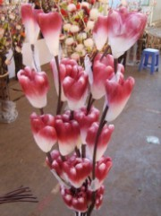
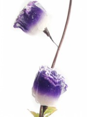
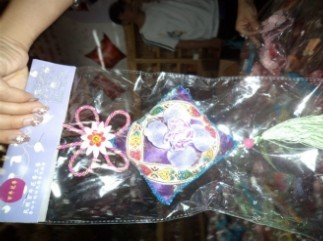
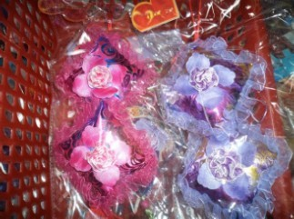

原文由 死劲哭 发表于 2011-7-8 12:39:36 :
恭祝姐姐六日游圆满结束！ 我当初买了三千多元干花（被广告了）回来送朋友。姐姐有没有买几块玉器呢。那里的玉还是比较正宗的

云南之旅18 结束篇
2011.6.26.
历经6天的云南昆明丽江大理6日游，到今天结束。最后一天导游带我们去了昆明干花市场，这里的干花品种多，一些花被风干以后，保存下来，可以保存好几年呢，而且这些干花你喷上水，还会开花，可以开2个月左右，左右持续几年。还有一些干花可以随着气温变色，当气温达到23度以上，干花 的颜色就改变，还有一些干花带有香味，摆放一些干花在屋里，芳香扑鼻，很是不错。还有一些香囊，各种花香的味道应有尽有....

干花

香囊
我们是晚上21:10飞机，等到达天津机场已经是0:35分了，在空中领略了夜得魅力，到达天津机场上空的时候，从窗户往外往看，天津 的夜空美丽极了，各色灯光交错，灯火阑珊处，却井井有条.......
［ 掌棋宣传员 于 2011-7-9 1:26:10 时花20金币送鲜花一朵］
［ 掌棋宣传员 于 2011-7-9 1:26:11 时花20金币送鲜花一朵］
［ 掌棋宣传员 于 2011-7-9 1:26:12 时花20金币送鲜花一朵］
［ 掌棋宣传员 于 2011-7-9 1:26:13 时花20金币送鲜花一朵］
［ 掌棋宣传员 于 2011-7-9 1:26:15 时花20金币送鲜花一朵］
［ 掌棋宣传员 于 2011-7-9 1:26:15 时花20金币送鲜花一朵］
引用：玉 没有买，干花就买了380元的，没有多买，特色产品买了一些菌类，还有梅子。
原文由 死劲哭 发表于 2011-7-8 12:39:36 :
恭祝姐姐六日游圆满结束！ 我当初买了三千多元干花（被广告了）回来送朋友。姐姐有没有买几块玉器呢。那里的玉还是比较正宗的
引用：
原文由 梧桐风 发表于 2011-7-8 17:57:35 :
总共下来花了多少？
由于没有买翡翠和银器饰品，所以花费不多，我们夫妻一共花了5000元左右，其中团费每个人1400元